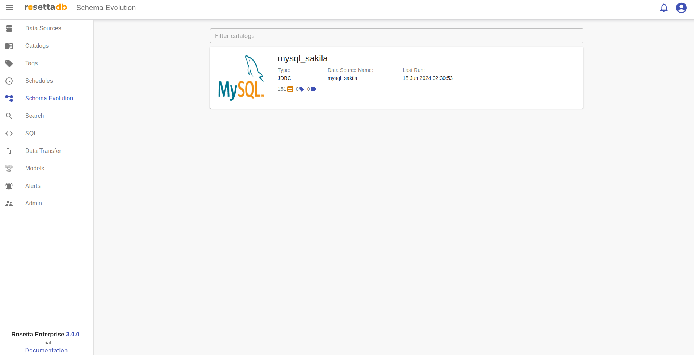
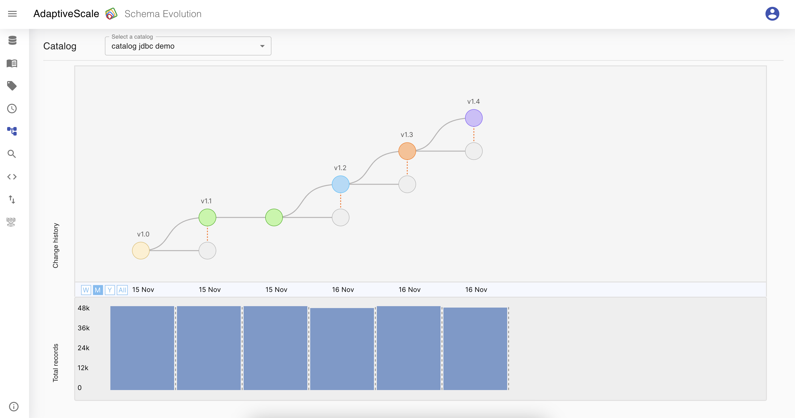
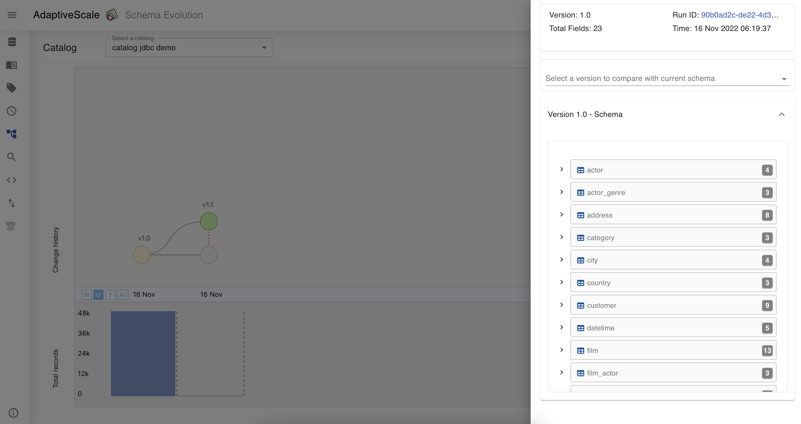
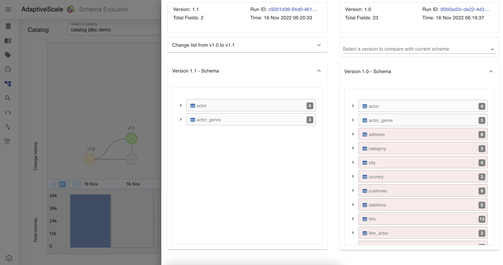
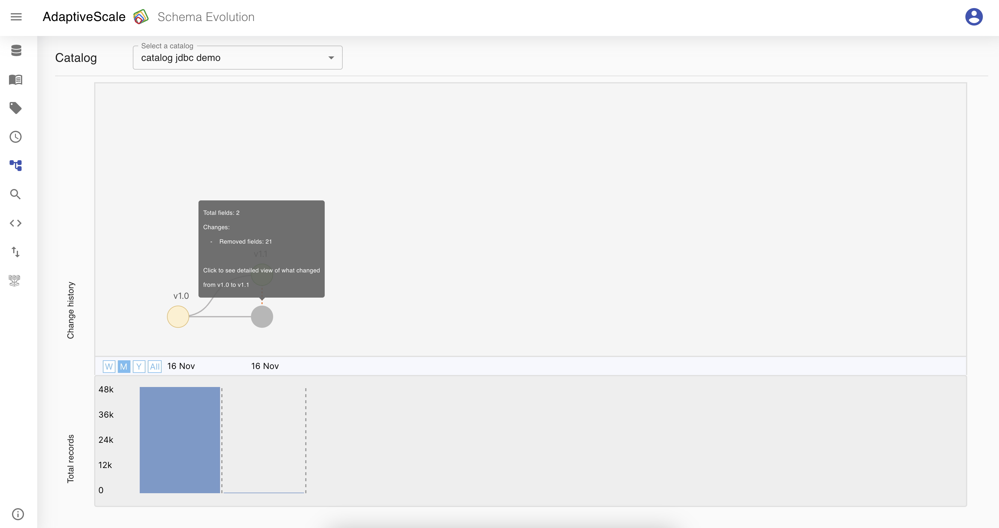
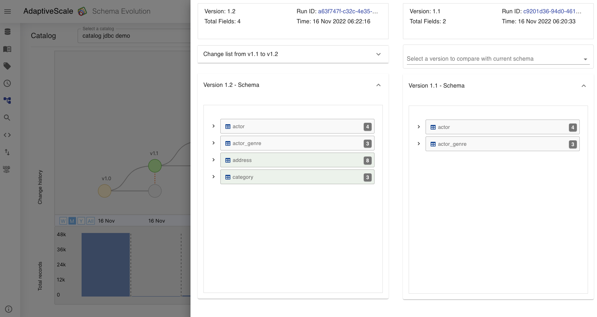
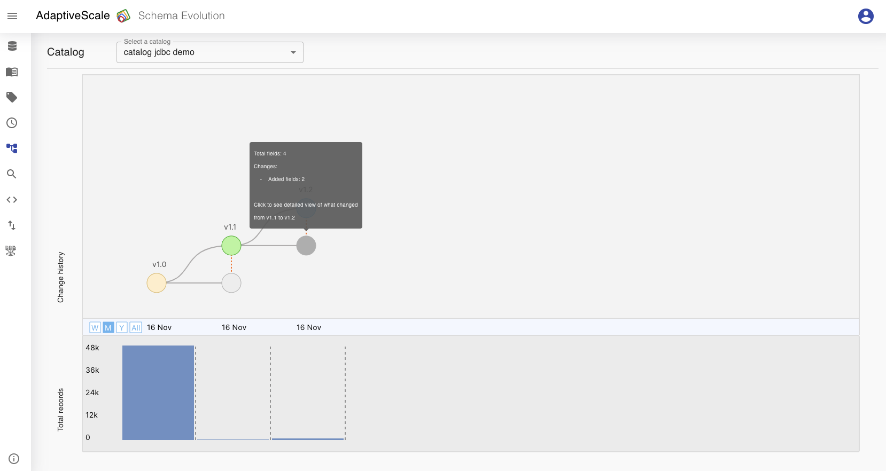
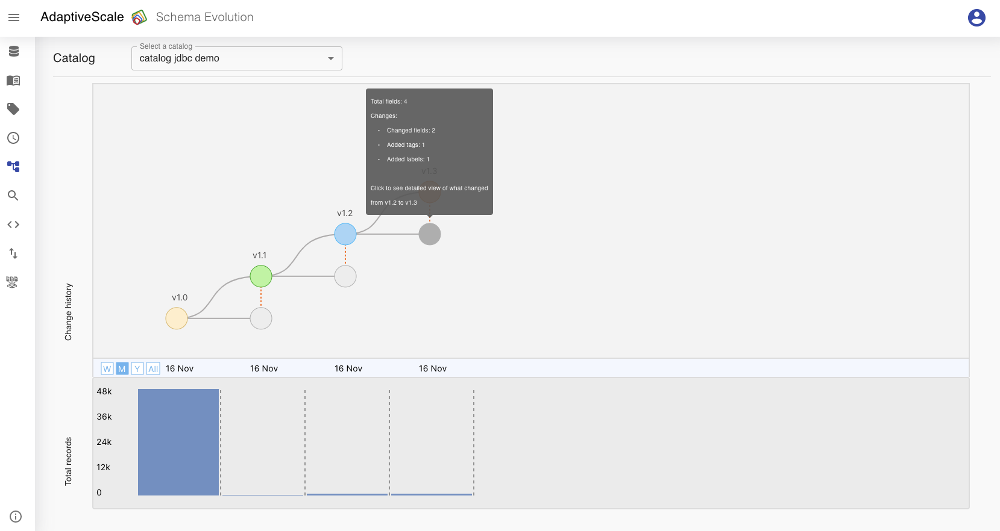
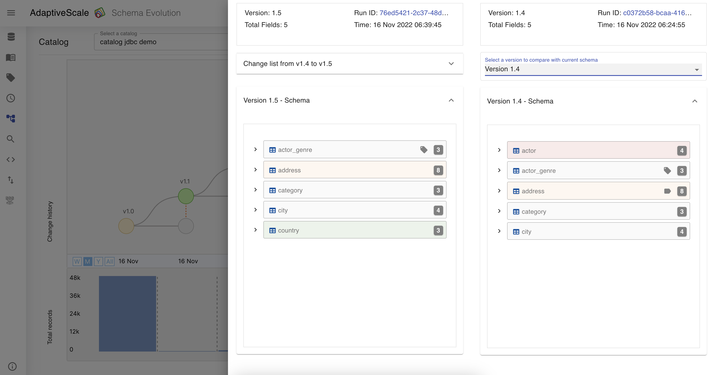
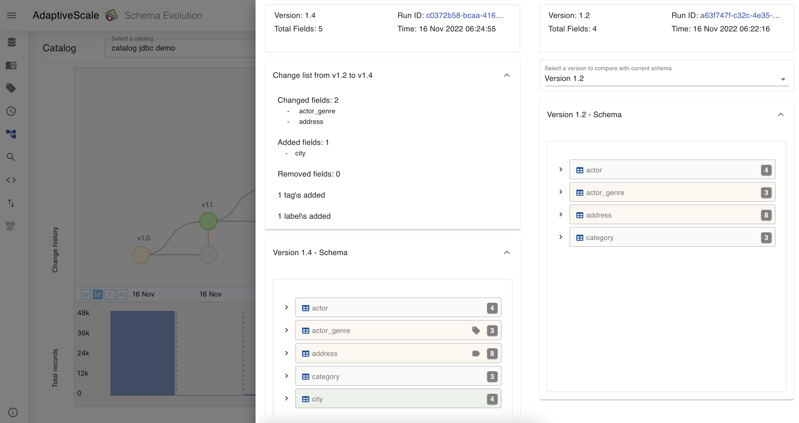

Schema Evolution
Schema evolution is the category where the user can choose the catalog and can see the changes made over time to that catalog. The data lineage can be seen very clearly, for example when the user selects a date, the column that has been changed is highlighted with orange color or if a column is deleted is highlighted with red color.
Example
To view the catalog changes over time, the user must click on Schema Evolution category tab and choose a catalog that wants to view the data lineage.

When the user clicks on the catalog, a new graphical view of all the runs is shown. The graph points represent the data lineage in time when that catalog was run.


With this feature, the user is able to compare the catalog changes during specific times.
For example, in the picture below, during the first run, version 1.0 there were 23 fields and in the second run there are only 2 fields, where 21 fields are deleted and are colored with red.

If the user hovers on the point of change in the graph there will be a detailed view of what was changed during the runs.

Now if the user goes to the Catalogs, add some fields and runs the catalog, it can see the new run in the data lineage, version 1.2. From two runs that were in the previous example, now there are three v1.0, v1.1 and v1.2.
The new columns that are added are colored with green and the number of fields from 2 became 4.


Lastly, if the user wants to make a change in the current schema, add a tag or remove one, it needs to return back to Catalogs, make the changes and run the catalog again. From three runs that were in the previous example, now there will be four.
The colummns that are modified are colored with orange and the user can see the tag and label icon on the columns.


All these changes in one are captured in the picture below.
Column actor is deleted and colored with red, column address is modified, has removed label and colored with orange, and colum country is added to the schema and colored with green.

To view more details the user can expand the list of changes and can see them described.
